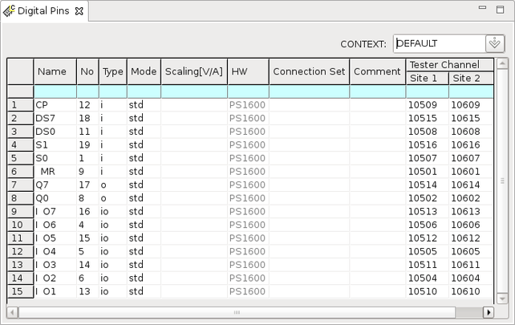
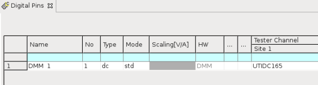

Digital Pins editor
Digital pins and DC Scale pins in PMU operating mode are configured in the Digital Pins editor.
The editor consists mainly of the tabular pin configuration area. The CONTEXT drop‑down list at the top right allows you to select a mode context.

In the pin configuration area, the Name, No, and Type parameters configure the DUT pins. The Mode and Tester Channel parameters give instructions to the software about how it must configure the test system channels. The HW parameter shows the tester channel hardware information. The Connection Set parameter adds the ability to sequentially reuse DC Scale channels in other pin definitions.
The following table describes the function of these parameters.
Name |
A descriptive and unique name for the DUT pin. The pin name can have up to 64 alphanumeric characters. Spaces and the following characters are not allowed:
It is also recommended not to use the following characters, as it will not be possible to save the Pattern Debug Tool configuration layout using these: < > Other SmarTest windows will always display the pin name when they refer to a pin of the DUT. |
| No | The optional parameter defines the pin number which is set according to the DUT packaging. |
| Type | The function of each pin on your DUT. The pin is configured to either to
A list offers you the following choices for each pin:
|
| Mode | The operating mode of the pin. A list offers you the following choices for each pin:
|
| Scaling |
This column applies to the CMON option of the Mode column. The setting defines the scaling factor of the XPS256 current monitor output in volts per ampere (V/A). |
| HW | This column is not editable. After you enter the tester channel, it automatically shows the hardware information of this channel. In the Digital Pins editor, the following items may be displayed:
|
| Connection Set | Optional string parameter. This parameter is currently not supported. |
| Comment | Optional string parameter. You can provide additional description of the pin in this column. |
| Tester Channel | The tester channels that have been wired to your DUT. The software uniquely identifies each channel in the system using a five‑digit channel‑ID. The syntax for the channel specification of an IO channel is aaabb where:
For example, 10301 refers to the channel 01 of the pogo block 103. For Utility DC pins the channel id is UTIDC, followed by a three digit number, specifying the utility block of the card cage. For DC Scale channels, there are the following additional rules:
|
DC Scale pin (PMU mode) setup
The DC Scale pin of PMU mode is set up in the Digital Pins editor. In PMU operating mode, you use the DC Scale card like a standard PMU to temporarily supply power in a single test suite or for a group of test suites.
The following table describes for DC Scale pins some more specific settings in the pin configuration area.
| Type |
The function of each pin on your DUT. For a DC Scale pin in PMU operating mode, the parameter must be dc. |
| Mode |
The operating mode of the test system channel. For a DC Scale pin in PMU operating mode, it must be SIG. |
Examples
DC Scale pin (PMU mode) setup
The following table shows an example configuration for DC Scale pins in PMU mode.
| Name | Type | Mode | HW | Connection Set | Comment | Tester Channel |
|---|---|---|---|---|---|---|
| Vdd_1 | dc | SIG | DCS-DPS128HC | 10104 | ||
| Vdd_2 | dc | SIG | DCS-DPS128HC | 10105-10106 |
Utility DC pin setup

Functional changes
- Introduced in SmarTest 6.5.0
- SmarTest 7.1.3: Changed the parameter Instrument to HW.
- SmarTest 7.1.3: Removed the parameter Ser.R[ohm].
- SmarTest 7.1.3: Added the HV mode option.
- SmarTest 7.2.0: Modified pin name length.
- SmarTest 7.3.1: New parameter "Connection Set".
- SmarTest 7.3.1: DC Scale PVI8 card added.
- SmarTest 7.4.0: DC Scale AVI64 card added.
- SmarTest 7.5.0: DC Scale FVI16 card added.
- SmarTest 7.10.0: PVI8 not supported, HV mode option not supported
- SmarTest 7.10.1: DC Scale XPS256 card added.
- SmarTest 7.10.2: XPS256 current monitor: New option "CMON" for "Mode" column and new "Scaling" column.